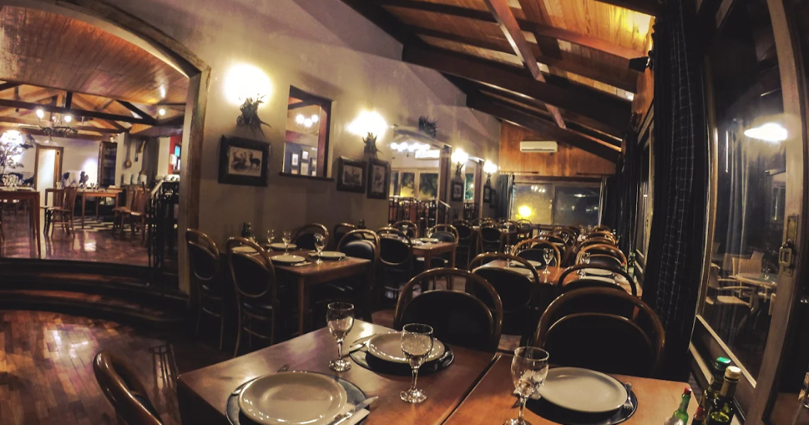

El Fuego

★★★★
Informações Gerais
📍R. Garibaldi, 20 - Centro, Gramado - RS
📞Telefone: +55 543286-3055
🕒Horário de funcionamento: Segunda a Domingo das 11:30 ás 22:30 horas.
Sobre
O El Fuego em Gramado é um restaurante especializado em carnes e parrillas, oferecendo uma experiência gastronômica única. Com um ambiente acolhedor e contemporâneo, o restaurante se destaca pela qualidade de suas carnes, que são preparadas na brasa com sabores intensos e suculentos. Ideal para quem aprecia uma refeição saborosa e bem feita, o El Fuego é uma excelente opção para os amantes de churrasco e cortes nobres em Gramado.
Comentários (3.751 avaliações)
Ana Vitória ★★★★★
A experiência no El Fuego foi muito boa! As carnes são de excelente qualidade, preparadas de forma suculenta e com sabores intensos. O ambiente é agradável e acolhedor, mas o tempo de espera foi um pouco mais longo do que o esperado. No geral, uma ótima opção para quem ama carnes em Gramado!Gostou? Deixe sua avaliação!